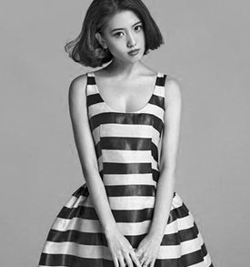
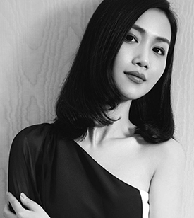
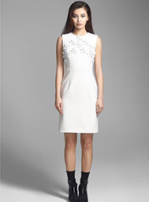
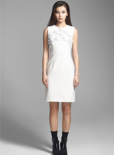
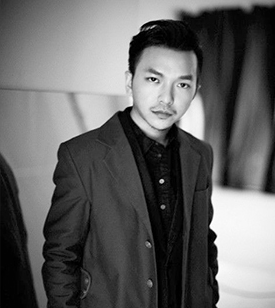
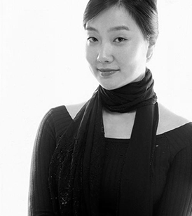

设计师刘清扬（ CHRISTINE LAU），生在北京，长在香港，18岁留学英国，就读于 CENTRAL SAINT MARTINS COLLAGE英国圣马丁艺术设计学院） TEXTILEDESIGN（面料设计）专业，出于对服装设计的热爱，毕业后，在做面料设计师的同时开始自学服装设计。在中西文化结合的生长环境影响下，形成了对设计的独特见解。面料设计的基础更令其在服装设计上有着得天独厚的优势。
设计风格 DESIGN STYLE
设计风格优雅而前卫，注重服装设计的原创精神，设计师将复古元素和现代简约设计巧妙的结台在一起，创造出一种精致并且经典的设计风格。设计师认为面料是影响服装设计的关键所在，因此对面料的运用有着独特的见解而每一季由设计师亲自操刀设计的另类印花面料

韩璐璐曾游学于加拿大及意大利，在意大利米兰顶级设计学院 AISTITUTO MARANGON获得硕士学位。她曾参与多家高端品牌的设计项目，其中更以自由设计师身份加入世界顶级礼服巨擘桂由美 YUMI KATSURA的设计工作，成为其合作的首位华人设计师。同时，以时尚博主冠军身份受邀ELE巴黎秀场头排客，并担任悦己专栏撰稿人及多家电视媒体造型师。作为“新式轻礼服”创导者，从2008年HL设计工作室成立之初，便受到都会精英女性的热捧和时尚媒体的广泛关注.
设计风格 DESIGN STYLE
作为“断新式轻礼服”创导者，韩璐璐不拘泥于轻礼服既为酒会小礼服的固有形式，推出了“新式轻礼服”的概念将礼服的精致与成衣的实穿完美结台。在材料及工艺的选择处理上，细致考究、自然妥贴。她擅长将典雅的东方气质与利落的西式剪裁相融和，强调女性精致、优雅的特质；提倡一衣多变及无季节性的穿搭理念，力求在设计感与实穿性上找到最佳契合点.

 

周翔宇出生于1982年，毕业于 DEN HAAG服装学院，曾经攻读工业造型设计并在 AMSTERDAM自由大学修读荷兰语。周翔宇曾经为戛纳国际电影节、威尼斯国际电影节、东京国际电影节、香港国际电影节、盖山国际电影节、印度国际电影节等艺人、导演定制红毯礼服
设计风格 DESIGN STYLE
DER ZHOU以独特的视觉艺术角度，出众的设计剪裁进行种新的诠释，他的多元化的市场理念在中国服装界构筑出一个全新的商业模式，同祥宇喜欢 MIUCCIA PRADA以及 NICOLAS GHESQUIERE的设计，多年的专业经历让他对设计以及经营都有着很清新的思路。他的作品非常注里服装穿着时的整休搭配性，强调横湖性别的着装概念，而不是刻意的中性感，一切以完美的视觉效果出发

罗峥淡然处事，笑谈风云，在成功经营自己的时装品牌的同时又成为国际投资商的座上宾，用她设计师敏锐的感悟与与他们讨论着天下时尚大势。但她毕竟只是一个女孩子，而且还是一个很年轻的女孩子。所以知性加感性的她有着无限美好的发展前景。看罗峥设计的时装，就会发现许多艺术元素，比如，用扇子、中国花鸟、旧上海洋烟图等意象组台而成的中西合璧旗袍；
设计风格 DESIGN STYLE
风之翼系列源自新古典浪漫主义，秉承经典时尚的风格，极富唯美，浪漫的韵味。把传统的思维用现代的理念表达出来，寻求一种自然而现代的平衡。用纯艺术的，戏剧性的手法来突出一种典雅的气质。运用各种富有机理质感的面料和现代的结构技巧来实现时尚与古典优雅的统一，创造一种不同凡想的视觉效果。从而营造出高贵中带有不羁的女性，她就象灵动而富有激情的天使，于典雅中流露着忧郁，诠释着无法抵挡的女性魅力
